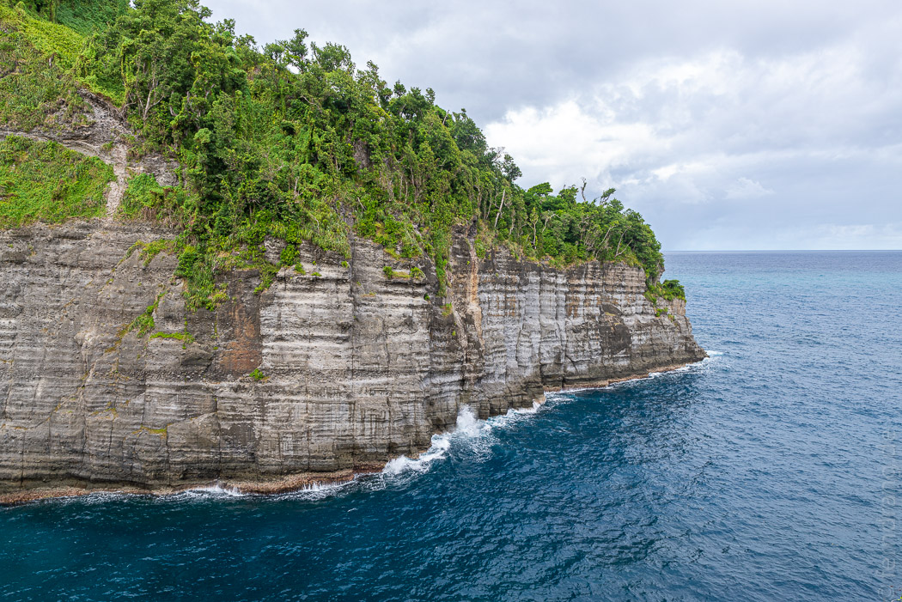
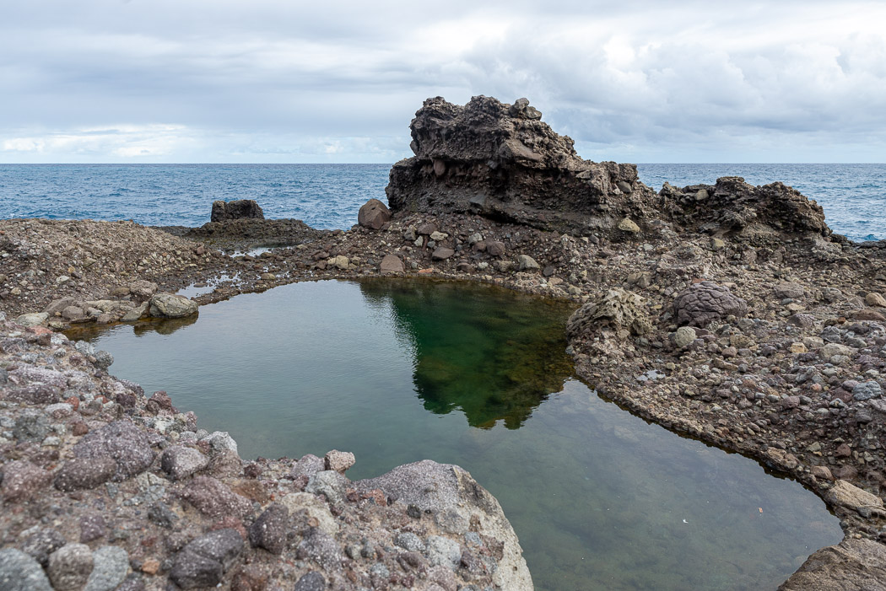
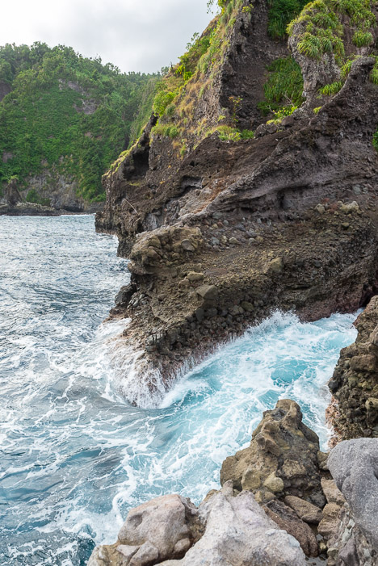
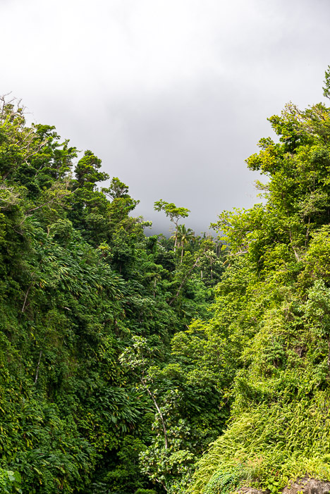
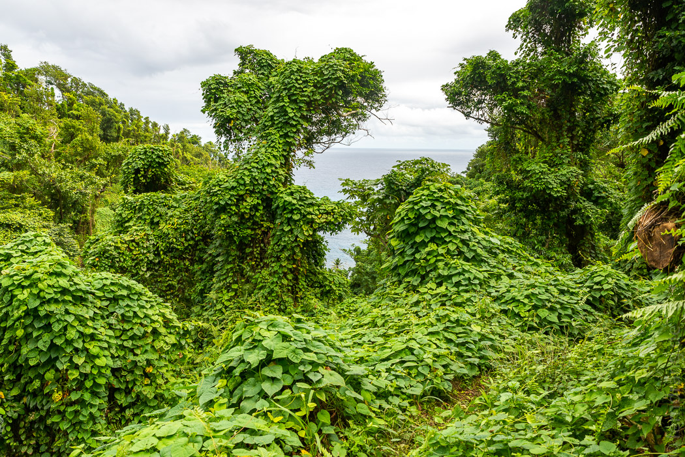

Entlang der Ostküste gibt es viele lohnenswerte Ausflugsziele. Der Glassé Point zum Beispiel ist eine Felszunge, die sich erst steil an der Küste abfallend dann flach ins Meer schiebt. Dort haben sich hübsche Pools gebildet, während drum herum wild das Meer tobt.
   Der Weg zum Meer führt eine halbe Stunde lang über einen Trampelpfad durch dichten Wald. Wie überall auf der Insel fehlen die meisten Baumkronen. Die sind alle von dem schlimmen Hurricane abgedeckt worden. Aber seitdem sind das Unterholz und die Ranken förmlich explodiert. Jeder tote Baum ist von einer üppig grünen Schicht überzogen. Dominica wirkt dadurch wie aus einer anderen Zeit, niemand würde sich hier über Dinosaurier wundern.
